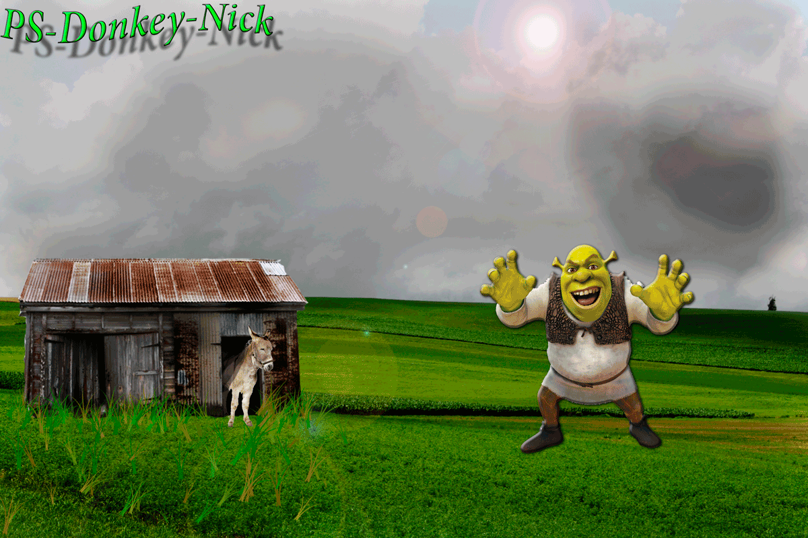

GIFGIF, short for Graphics Interchange Format, is limited to the 8 bit palette with only 256 colors. GIF is still a popular image format on the internet because image size is relatively small compared to other image compression types. GIF compresses images in two ways: first, by reducing the number of colors in rich color images, thus reducing the number of bits per pixel. Second, GIF replaces multiple occurring patterns (large patterns) into one. So instead of storing five kinds of blue, it stores only one blue. GIF is most suitable for graphics, diagrams, cartoons and logos with relatively few colors. GIF is still the chosen format for animation effects. Compared to JPEG, it is lossless and thus more effective with compressing images with a single color, but pales in detailed or dithered pictures. In other words, GIF is lossless for images with 256 colors and below. So for a full color image, it may lose up to 99.998% of its colors. One edge of the GIF image format is the interlacing feature, giving the illusion of fast loading graphics. When it loads in a browser, the GIF first appears to be blurry and fuzzy, but as soon as more data is downloaded, the image becomes more defined until all the date has been downloaded. |  |
Pros
Cons
|

|
Nick Cottrell, web design pd1
Nick Cottrell Web Design PD01